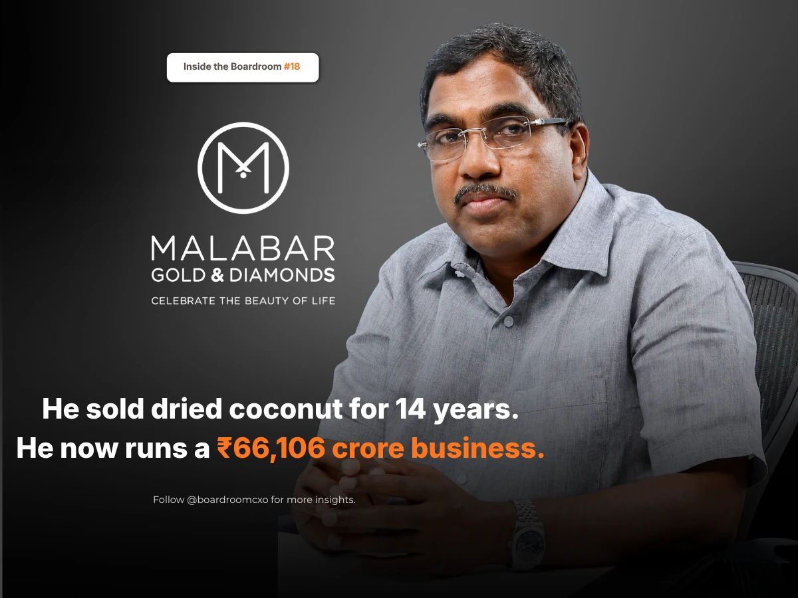

In 1993, a man who sold dried coconut in Kozhikode decided to sell gold. He was 36. He had finished school at Class 12 and had already watched one business fail.
No bank would back him.
M P Ahammed had spent fourteen years selling dried coconut and spices to shopkeepers across Kerala, and had worked out it would never get big. He was looking for something that would. "My friend who was based in Mumbai told me gold prices will increase," he says.
Who Is M P Ahammed?
M P Ahammed is the founder and chairman of Malabar Gold & Diamonds, today India's largest jeweller by revenue. He could see why gold made sense in 1993. The rupee had fallen from ₹17.5 to the dollar in 1990 to ₹30 by 1993, so the money Kerala families were sent from the Gulf was suddenly worth far more. Gold was trading around ₹400 a gram.
He raised ₹50 lakh from friends and family, took a room of around 200 to 400 square feet on the first floor of a building, and opened a jewellery shop.
The Financing Problem No Bank Would Solve
Customers came. But a jewellery shop is only as big as the gold sitting inside it, and every new store meant buying crores of stock before selling a single piece. He had nothing left to buy it with.
Most people in that position wait, or borrow at whatever rate they can get. He did not. He went to his customers instead, selling debentures to Malayali workers in the Gulf at up to 15% interest, convertible into shares once the business turned a profit. The men buying his gold were paying for his next shop.
He opened in the Gulf in 2008. The 50th store came in Riyadh in 2011, the 300th in the United States in 2023. Malabar Gold & Diamonds now runs 445 showrooms across 14 countries. Revenue for the year to March 2025 was ₹66,106 crore, up 37%, with profit of ₹1,567 crore. Deloitte ranks it 19th among the world's luxury goods companies. Five percent of the profit goes to charity every year.
The Boardroom Lesson Most Founder Stories Miss
Most coverage of this story treats the debenture scheme as a clever workaround, a way around the banks that said no. What gets skipped is what it actually required: enough trust with his own customer base that Gulf workers would hand over years of savings to a first-generation jeweller with no formal financial backing and a failed business already behind him.
A bank lends against what you own. Customers lend against who you are.
That is a much harder thing to build than a credit history. A bank evaluates collateral. A customer base evaluates a track record of keeping its word, transaction by transaction, over years. Ahammed had spent fourteen years building exactly that reputation in a different business before he ever needed it in this one.
Common Mistakes Boards Make When Evaluating Founder-Led Growth
Boards and investors evaluating a founder who scaled without conventional financing tend to make the same three errors.
They read unconventional financing as a sign of weak fundamentals. A founder who could not get a bank loan is not automatically a founder with a bad business. In Ahammed's case, the obstacle was a lack of formal credit history and education, not a flawed model.
They underweight the trust infrastructure a founder builds outside the business itself. The debenture scheme worked because of relationships built over a prior, unrelated fourteen-year career. That kind of community trust rarely shows up on a balance sheet, but it is often the actual asset that made the growth possible.
They assume family-and-friends funding cannot scale. Malabar's debenture model scaled from a single Kozhikode shop to 445 stores across 14 countries. The structure that starts as an informal workaround can become a genuine, repeatable financing mechanism if the founder treats it with the same discipline as institutional capital.
A Framework for Evaluating This Kind of Founder
When we brief boards or investors on a leadership search involving a founder-led retail or consumer business with an unconventional financing history, we push for three specific checks.
- Separate the financing mechanism from the underlying unit economics. Ask what each store or unit actually earned once open, independent of how its opening was funded. Ahammed's stores had to work on their own terms; the debentures only solved the timing problem of stocking them.
- Ask what trust was built before the business needed it. A founder's ability to raise unconventional capital is rarely spontaneous. It is usually the payoff of a much longer track record, worth understanding in its own right.
- Look at whether the model was formalized as it scaled. A workaround that stays informal caps out. One that gets professionalized, audited, and repeated at each new market, as Malabar's did across 14 countries, is a genuine operating capability.
Why This Belongs in the Boardroom, Not Just the Business Pages
This sits alongside the same category story we examined in C K Venkataraman's decade fixing how Tanishq read the Indian jewellery buyer: both leaders had to solve a problem specific to jewellery retail, capital intensity in Ahammed's case, customer trust in Venkataraman's, in ways that had no template to copy from outside the category.
The market does not reward the founder with the most conventional resume. It rewards boards and investors who can tell the difference between a workaround born of desperation and one born of genuine insight into what a business, and its customers, actually needed.
Frequently Asked Questions
Who is M P Ahammed?
M P Ahammed is the founder and chairman of Malabar Gold & Diamonds, India's largest jeweller by revenue. He spent fourteen years selling dried coconut and spices to shopkeepers across Kerala before opening his first jewellery shop in Kozhikode in 1993 at age 36, after finishing school only up to Class 12 and watching an earlier business fail.
How did M P Ahammed start Malabar Gold & Diamonds?
In 1993, M P Ahammed raised ₹50 lakh from friends and family and opened a jewellery shop of around 200 to 400 square feet in Kozhikode. He timed the move to a sharp rupee depreciation, from ₹17.5 to the dollar in 1990 to ₹30 by 1993, which made remittances from Gulf-based Malayali workers worth far more in rupee terms, at a time when gold traded around ₹400 a gram. No bank would fund him, given his lack of formal education and an earlier business failure.
How did M P Ahammed fund Malabar's expansion without bank loans?
Instead of borrowing from banks, M P Ahammed sold debentures to Malayali workers in the Gulf at up to 15% interest, convertible into shares once the business turned a profit. The same customers buying his gold were effectively funding his next store, letting him expand into the Gulf starting in 2008 without conventional bank financing.
How big is Malabar Gold & Diamonds today?
Malabar Gold & Diamonds now runs 445 showrooms across 14 countries, having opened its 50th store in Riyadh in 2011 and its 300th in the United States in 2023. Revenue for the year to March 2025 was ₹66,106 crore, up 37%, with profit of ₹1,567 crore, making it India's largest jeweller by revenue. Deloitte ranks it 19th among the world's luxury goods companies.
What is Malabar Gold's approach to profit and charity?
Malabar Gold & Diamonds directs 5% of its annual profit to charity, a practice M P Ahammed has maintained as the business scaled from a single Kozhikode showroom to a multinational jewellery retailer.
Related Reading
C K Venkataraman: How Tanishq Fixed a Decade of Being Wrong About India
Read → R · 02 Category Intelligence · August 2026Aukera Raised ₹90 Cr: Inside India's Lab-Grown Diamond Race
Read → R · 03 Compensation Data · June 2026The Hidden Comp Gap: Why Jewelry Brands Keep Losing Candidates at the Offer Stage
Read →Scaling a jewellery or retail brand and need leadership that has done it before?
We screen for candidates who understand the specific economics of jewellery and retail growth, not generalists borrowing a playbook from another category. Brief us on your next CXO mandate and we will tell you what the market actually has to offer.
Brief Us on a Mandate See our retail & jewelry placements →